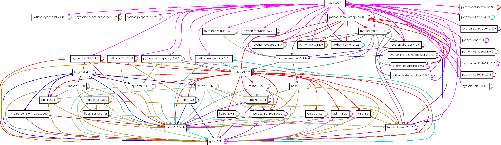

Introduction
is the data repository system developed by and for 4TU.ResearchData. The name finds its inspiration in Thoth, the Egyptian entity that introduced the idea of writing.
Obtaining the source code
The source code can be downloaded at the Releases ^1 page. Make sure to download the djehuty-.tar.gz file.
Or, directly download the tarball using the command-line:
curl -LO https://github.com/4TUResearchData/djehuty/releases/\(@*\\*@)download/v(@*\djehutyversion{}*@)/djehuty-(@*\djehutyversion{}*@).tar.gz
After obtaining the tarball, it can be unpacked using the t͡ar command:
tar zxvf djehuty-(@*\djehutyversion{}*@).tar.gz
Installing the prerequisites
The program needs Python (version 3.8 or higher) and Git to be installed. Additionally, a couple of Python packages need to be installed. The following sections describe installing the prerequisites on various GNU/Linux distributions. To put the software in the context of its environment:

The web service of stores its information in a SPARQL 1.1 endpoint. We recommend either Blazegraph ^2 or Virtuoso open-source edition ^3.
Installation on Enterprise Linux 7+
The Python packages on Enterprise Linux version 7 or higher seem to be too far out of date. So installing the prerequisites involves two steps.
The first step involves installing system-wide packages for Python and Git.
yum install python39 git
The second step involves using Python’s v͡env module to install the Python packages in a virtual environment:
python3.9 -m venv djehuty-env
. djehuty-env/bin/activate
cd /path/to/the/repository/checkout/root
pip install -r requirements.txt
Installation instructions
After obtaining the source code (see section ) and installing the required tools (see section ), building involves running the following commands:
cd djehuty-(@*\djehutyversion{}*@)
autoreconf -vif # Only needed if the "./configure" step does not work.
./configure
make
make install
To run the m͡ake install command, super user privileges may be required. Specify a -͡-prefix to the c͡onfigure script to install the tools to a user-writeable location to avoid needing super user privileges.
After installation, the d͡jehuty program will be available.
Pre-built containers
4TU.ResearchData provides Docker container images as a convenience service for each monthly d͡jehuty release. The following table outlines the meaning of each image provided. The images are published to Docker Hub [^4].
| Image tag | Description |
| d͡evel | Image meant for development purposes. Before it executes the d͡jehuty command it checks out the latest codebase. So re-running the same container image may result in running a different version of d͡jehuty. |
| l͡atest | This image points to the latest d͡jehuty release. It does not automatically update the d͡jehuty codebase. |
| X͡X.X | 4TU.ResearchData releases a version each month where the number before the dot refers to the year and the number after the dot refers to the month. Use a specific version image when you want to upgrade at your own pace. |
To build the container images for yourself, see the build instructions in the file.
[^4]: